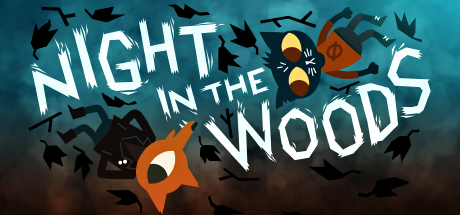

¡Cuidado por ahí! Reseña: Night in the woods

El ambiente que rodea a este juego es uno sumamente familiar y cálido. El ambiente en un videojuego puede ir más
allá que simplemente el escenario; sino puede representarse en la música, las mecánicas, los diálogos y los personajes.
Y el ambiente que da este juego en esos aspecto es sin duda destacable. El juego es una novela visual junto con
minijuegos que ayudan al entendimiento e inmersión de la historia, lo cual es fantástico, una novela visual que no sólo
cuenta su historia en los típocos diálogos, sino que se explica a travéz de las mecánicas, ya que los minujuegos o la
ciudad en sí como sandbox complementas a los ya inteligentes y naturales diálogos de los peronajes.
Ahora, ¿de qué trata el juego? a grandes rasgos va sobre Mae Borowski, una gata de 20 años que tras abandonar la
universidad, regresa a su ciudad natal "poussum springs" un pueblo ex-minero donde viene a buscar un lugar mas cálido y familiar, mientras
se resuelven unos casos de desapación algo sobrenaturales que acompañan a la trama principal.
La intención con el juego es representar bien lo que es vivir en un pueblo pequeño en crecimiento (o en este caso,
decrecimiento) y sobre las dificultades que se puede pasar ahi siendo jóven.
A veces, cuando juegas a un videojuego debes tener en cuenta de el juego hará muchas asunciones sobre ti, como tu posición
econímica, las amistades que tienes y cómo tratas problemas. La mayor suposición que hace el juego sobre ti es que
quizás no estás pasando por un buen momento o tienes algo que te preocupa, y este tema lo trata muy bien el juego, con
esta suposición, el juego quiere que se reflejes en uno de los personajes, así puedas llevar la historia de ese mismo
personaje junto a la tuya. Hay muchas lecciones que deja el juego, pero una de las más importantes es que al final de todo,
debes aferrarte a lo que sea.